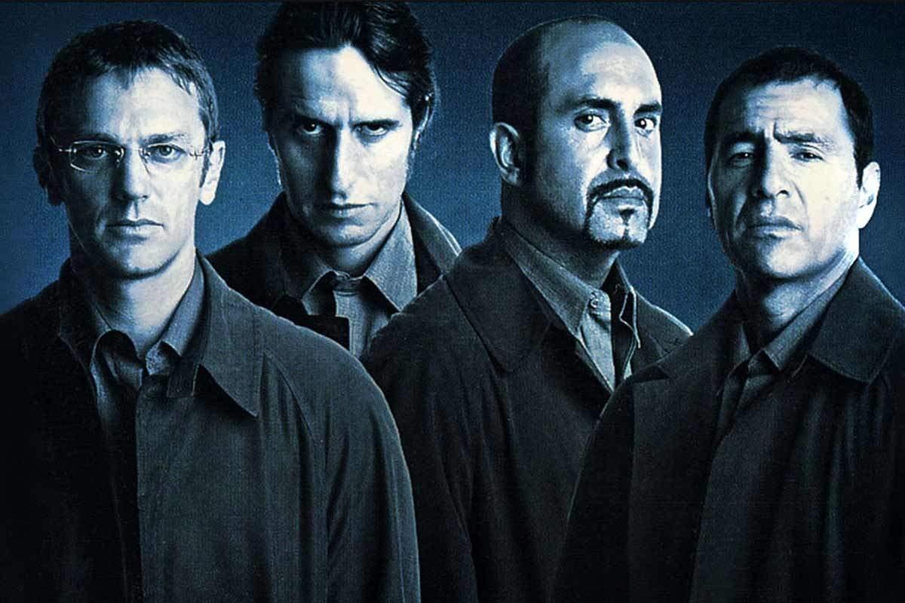

Los simuladores
Sinopsis
Los Simuladores es una serie argentina creada y dirigida por Damián Szifrón, estrenada en 2002. La historia sigue a cuatro hombres que forman un grupo especializado en resolver problemas de otras personas mediante elaborados planes y simulaciones. Los protagonistas son Mario Santos, Pablo Lamponne, Emilio Ravenna y Gabriel Medina, cada uno con diferentes habilidades que resultan fundamentales para llevar adelante sus misiones.
El grupo trabaja de una manera muy particular: cuando una persona se encuentra en una situación que parece no tener solución, los Simuladores diseñan un plan para modificar las circunstancias y conseguir que el problema se resuelva. Para hacerlo, recurren a actores, disfraces, falsas identidades, información cuidadosamente investigada y diferentes tipos de engaños. Todo está organizado con gran precisión y cada integrante cumple una función específica.
Los casos que enfrentan son muy variados. Algunos están relacionados con problemas familiares, laborales, económicos o sentimentales, mientras que otros involucran situaciones de injusticia o personas que se encuentran en circunstancias extremas. Aunque utilizan el engaño como herramienta principal, su objetivo generalmente es ayudar a alguien que necesita una solución y evitar la violencia.
La serie combina comedia, drama, suspenso y elementos policiales, y se caracteriza por sus diálogos, el ingenio de sus protagonistas y la forma en que cada episodio presenta una situación diferente. Además, muchas de las historias plantean preguntas sobre la justicia, la moral y los límites que pueden existir entre hacer lo correcto y utilizar métodos cuestionables para conseguirlo.
Contexto
Los Simuladores surgió en Argentina a comienzos de la década del 2000, en un contexto social marcado por importantes dificultades económicas y políticas. La serie comenzó a emitirse en 2002, poco después de la profunda crisis argentina de 2001. En ese momento existía un fuerte clima de desconfianza hacia las instituciones y muchas personas atravesaban problemas económicos, laborales y sociales.
Este contexto resulta importante para comprender parte del éxito de la serie, ya que sus protagonistas aparecen como personas capaces de encontrar soluciones cuando las instituciones tradicionales no pueden hacerlo. En lugar de recurrir directamente a la policía, los tribunales u otras autoridades, los personajes crean sus propias estrategias para resolver los conflictos.
Uno de los aspectos más originales de la serie es justamente la idea de que los protagonistas pueden construir una realidad alternativa para conseguir un determinado resultado. A través de sus simulaciones, logran que otras personas crean determinadas situaciones y actúen de una manera que permita solucionar el problema. Esto genera situaciones cómicas y sorprendentes, pero también plantea debates sobre la verdad, la manipulación y la justicia.
La serie tuvo un gran impacto en la televisión argentina y se convirtió en una obra muy reconocida de la ficción nacional. Su mezcla de humor inteligente, suspenso y crítica social, junto con la personalidad de sus cuatro protagonistas, hizo que Los Simuladores se transformara en una de las series argentinas más recordadas y populares
Locaciones
Se grabó principalmente en Buenos Aires y distintos lugares del Área Metropolitana de Buenos Aires. La serie utilizó numerosas locaciones reales para darle mayor naturalidad a las historias y hacer que las simulaciones parecieran situaciones que podían ocurrir en la vida cotidiana.
A lo largo de los capítulos pueden verse casas, restaurantes, calles, comercios, hospitales y otros espacios públicos y privados. Además de estas locaciones, algunas escenas fueron realizadas en estudios de grabación, especialmente aquellas que requerían una mayor preparación o el armado de escenarios específicos.
El uso de diferentes lugares de Buenos Aires es un elemento importante de la serie, ya que permite mostrar distintos ambientes y situaciones sociales. De esta manera, la ciudad no funciona solamente como un fondo para las historias, sino que forma parte del universo en el que se desarrollan las misiones de los cuatro protagonistas
Creador, productores y guionistas
Creador
El principal creador de Los Simuladores fue Damián Szifrón, director y guionista argentino. Además de crear la idea original, Szifrón dirigió la serie y participó activamente en la escritura de los episodios.
Productores
La producción estuvo vinculada a Telefe y a Tao Films, productora formada para realizar la serie por Szifrón y los cuatro protagonistas
Guionistas
Además de Damián Szifrón como principal guionista participaron Diego Peretti (Quien interpreta al personaje Ravenna), Gustavo Malajovich y Patricio Vega como colaboradores autorales.